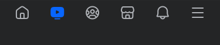
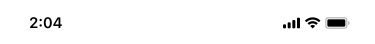

Caption & Browse
FMSS · interactive in-app browser (IAB) prototype — standalone mock

Nike, Sponsored. Luxuriously soft and tailored for comfort and everyday wear, the Nike 24.7 Collection moves with you all day long. Combining breathable fabrics and a sleek fit, it’s perfect for all your activities.


Tap the caption (“… more”) to open the in-app browser (IAB) as a half sheet; Shop now opens it full screen. Drag the sheet up to go full, down to return to half or dismiss; in full screen, swipe up on the page to scroll it. X or Escape closes.